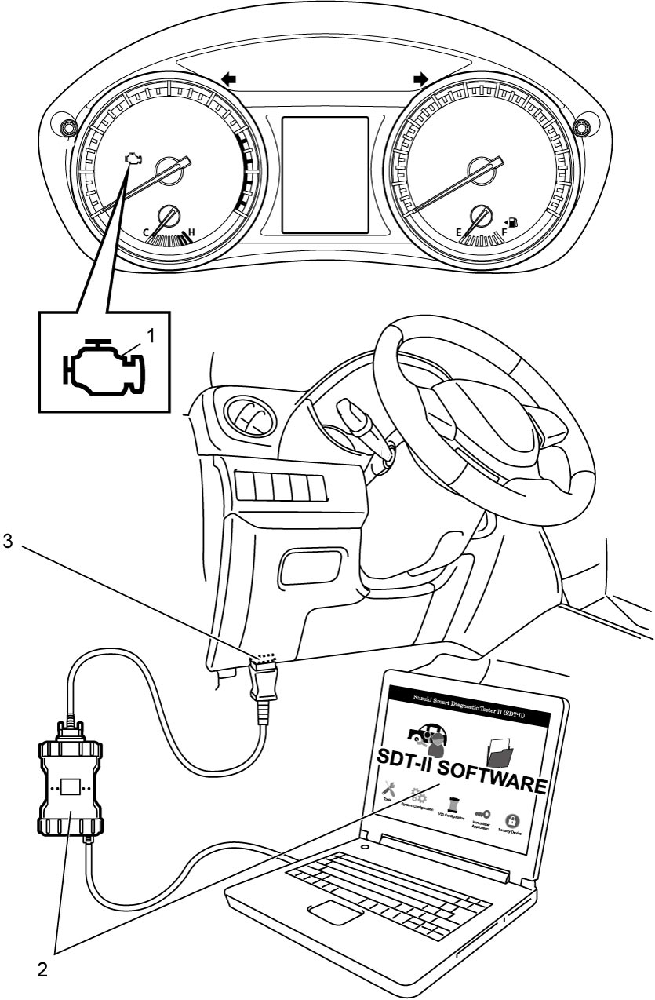

1A
| OBD System Description |
Discrimination for OBD System
There are five types of OBD system, type A, B, C, D and E, in accordance with the regulation of each country.
For discrimination of market code, refer to Identification Plate.
Vehicle equipped with the OBD system of Type A
Market code P02, P22, P35, P38 and P54
Vehicle equipped with the OBD system of Type B
Market code P05, P06, P10, P32, P43, P85 and P96
Vehicle equipped with the OBD system of Type C
Market code P24, P48 and P90
Vehicle equipped with the OBD system of Type D
Market code P30 and P71
Vehicle equipped with the OBD system of Type E
Market code P37
OBD system summary table
| Type A, C, D and E | Type B | ||
|---|---|---|---|
| SUZUKI scan tool (Suzuki SDT-II) | Freeze frame data | Available | Available |
| System readiness test | Available | Not available | |
| CAN communication OBD generic scan tool | Freeze frame data | Available | Not available |
| System readiness test | Available | Not available | |
General Description (Type A, C, D and E)
The ECM has the following functions.
•When ignition is “ON” with the engine at a stop, the ECM turns on the MIL (1) to check the circuit of the MIL.
•When ECM detects a malfunction which gives an adverse effect to vehicle emission while the engine is running, ECM makes the MIL in the combination meter of the instrument panel turn on or blink (blinking only when detecting a misfire which can cause damage to the catalyst) and stores the malfunction area in its memory.
(If ECM detects a malfunction only in the first driving cycle (refer to Driving Cycle) but does not detect the same malfunction in the next 2 consecutive driving cycles, ECM does not turn on MIL although it retains the associated DTC in its memory.)
•For some malfunctions, ECM adopts the 3 driving cycle detection logic (refer to 3 Driving Cycle Detection Logic) to prevent erroneous detection.
With this logic, MIL is turned on when the same malfunction is detected for 3 consecutive driving cycles.
•When a malfunction is detected, engine and driving conditions at the moment the malfunction was detected are stored in ECM memory as freeze frame data. (For the details, refer to description on Freeze frame data clearance.)
•Not only SUZUKI scan tool (2) but also CAN communication OBD-II generic scan tool can communicate with ECM via DLC (3). (Diagnostic information can be accessed using a scan tool.)
•When ECM detects a malfunction which gives an adverse effect to vehicle emission while the engine is running, ECM makes the MIL in the combination meter of the instrument panel turn on or blink (blinking only when detecting a misfire which can cause damage to the catalyst) and stores the malfunction area in its memory.
(If ECM detects a malfunction only in the first driving cycle (refer to Driving Cycle) but does not detect the same malfunction in the next 2 consecutive driving cycles, ECM does not turn on MIL although it retains the associated DTC in its memory.)
•For some malfunctions, ECM adopts the 3 driving cycle detection logic (refer to 3 Driving Cycle Detection Logic) to prevent erroneous detection.
With this logic, MIL is turned on when the same malfunction is detected for 3 consecutive driving cycles.
•When a malfunction is detected, engine and driving conditions at the moment the malfunction was detected are stored in ECM memory as freeze frame data. (For the details, refer to description on Freeze frame data clearance.)
•Not only SUZUKI scan tool (2) but also CAN communication OBD-II generic scan tool can communicate with ECM via DLC (3). (Diagnostic information can be accessed using a scan tool.)
General Description (Type B)
ECM diagnoses troubles which may occur in the engine and emission control system when ignition is “ON” and the engine is running, and indicates the result by turning on MIL (1). ECM and MIL operate as follows.
•MIL lights when ignition is “ON” with the engine at a stop regardless of the condition of Engine and Emission control system. This is only to check MIL in the combination meter and its circuit.
•If the engine and emission control system is free from any troubles, the ECM turns off the MIL several seconds after the engine starts.
•When ECM detects a trouble which has occurred in the engine and emission control system, it makes MIL turn ON while the engine is running to warn the driver of the trouble. At the same time it stores the trouble area in ECM memory. (The memory is kept as it is even if the trouble was only temporary and disappeared immediately. And it is not erased unless it is cleared by SUZUKI scan tool (2).)
For further detail of the checking / clearing procedure, refer to DTC Check:M16A or DTC Clearance:M16A.
•For some malfunctions, ECM adopts the 3 driving cycle detection logic (refer to 3 Driving Cycle Detection Logic) to prevent erroneous detection.
With this logic, MIL is turned on when the same malfunction is detected for 3 consecutive driving cycles.
•SUZUKI scan tool (2) can communicate with ECM via DLC (3).
•If the engine and emission control system is free from any troubles, the ECM turns off the MIL several seconds after the engine starts.
•When ECM detects a trouble which has occurred in the engine and emission control system, it makes MIL turn ON while the engine is running to warn the driver of the trouble. At the same time it stores the trouble area in ECM memory. (The memory is kept as it is even if the trouble was only temporary and disappeared immediately. And it is not erased unless it is cleared by SUZUKI scan tool (2).)
For further detail of the checking / clearing procedure, refer to DTC Check:M16A or DTC Clearance:M16A.
•For some malfunctions, ECM adopts the 3 driving cycle detection logic (refer to 3 Driving Cycle Detection Logic) to prevent erroneous detection.
With this logic, MIL is turned on when the same malfunction is detected for 3 consecutive driving cycles.
•SUZUKI scan tool (2) can communicate with ECM via DLC (3).

 "Expand image")
Warm-Up Cycle
A “Warm-Up Cycle” means sufficient vehicle operation such that the coolant temperature has risen by at least 22 °C (40 °F) from engine starting and reaches a minimum temperature of at least 70 °C (160 °F).
Driving Cycle
A “Driving Cycle” is a duration from an engine startup to the following engine shutoff.
3 Driving Cycle Detection Logic
The malfunction detected in the first driving cycle is stored in ECM memory (in the form of pending DTC) but MIL does not light at this time. ECM causes the MIL to light up when it detects third time the same malfunction in the next two driving cycles.
Pending DTC
“Pending DTC” is relevant to those DTCs to which the 3 driving cycle detection logic is applied. If such a DTC is detected and stored temporarily during the first of three consecutive driving cycles, the DTC is called pending DTC.
Freeze Frame Data
ECM stores the engine and driving conditions at the moment of the detection of a malfunction in its memory. This data is called “Freeze Frame Data”.
Therefore, it is possible to know engine and driving conditions (e.g. whether the engine was warm or not, whether the vehicle was running or stopped, whether air/fuel mixture was lean or rich) when a malfunction was detected by checking the freeze frame data. Also, ECM has a function to store each freeze frame data for three different malfunctions in the order of their detection. Utilizing this function, it is possible to know the order of detection of these malfunctions. If facilitates recheck and diagnosis of a trouble.
For details of freeze data that can be read from ECM, refer to the table below.
| DTC |
| Fuel System |
| Calculated Load |
| ECT |
| Short Term Fuel Trim |
| Long Term Fuel Trim |
| MAP |
| Engine Speed |
| Vehicle Speed |
| Ignition Advance |
| Intake Air Temperature |
| Absolute TP 1* |
| Time Since Engine Start |
| EVAP Canist Prg Duty |
| Fuel Tank Level |
| Barometric Pres |
| Battery Voltage |
| Relative TP** |
| Absolute TP 2* |
| Absolute APP 1* |
| Absolute APP 2* |
| Target Throt Pos |
NOTE:
•Freeze frame data with asterisk (*) indicates the ratio of the output voltage to the power supply voltage of related sensor.
When power supply voltage is 5.0 V and output voltage is 4.0 V, freeze frame data is displayed as follows.
When power supply voltage is 5.0 V and output voltage is 4.0 V, freeze frame data is displayed as follows.
—For systems where the output is proportional to the input voltage, it displays 80% (= the percent of maximum input reference voltage).
—For systems where the output is inversely proportional to the input voltage, it displays 20% (=100% minus the percent of maximum input reference voltage).
—For systems where the output is inversely proportional to the input voltage, it displays 20% (=100% minus the percent of maximum input reference voltage).
•For relative TP with asterisks (**) in above table, it indicates value calculated by formula ((output voltage – output voltage at closed throttle position) / power supply voltage).
When power supply voltage is 5.0 V and output voltage at closed throttle position is 1.0 V, freeze frame data is displayed as follows.
When power supply voltage is 5.0 V and output voltage at closed throttle position is 1.0 V, freeze frame data is displayed as follows.
—At closed throttle position (output voltage = 1.0 V), it displays 0%.
—At wide open throttle position (output voltage = 4.0 V), it displays 60%.
—At wide open throttle position (output voltage = 4.0 V), it displays 60%.
However, for systems where the output is inversely proportional to the input voltage, it displays 100% minus the above-mentioned formula.
Freeze frame data (For example)
 "Expand image")
Priority of freeze frame data (Type A, C, D and E)
ECM has 4 freeze frames from 0 to 3 where freeze frame data can be stored.
Frame 0 is a special frame where freeze frame data concerning emission-affecting malfunction has priority over data related to other (general) malfunctions. If any emission-affecting malfunction is detected while Frame 0 is holding a data related to general malfunctions (priority “2” data in the following table), then the currently stored data is replaced by the data concerning the newly detected malfunction (priority “1” data in the following table).
| Priority | Freeze frame data in Frame 0 |
|---|---|
| 1 | Data concerning any of the following malfunctions: Misfire Detected (P0300 – P0304), System Too Lean (P0171) and System Too Rich (P0172) |
| 2 | Data concerning malfunctions other than the above. |
Frames 1 to 3 are assigned to general malfunctions. They individually store the freeze frame data for 3 different general malfunctions in the order of detection (i.e., Frame 1 stores the data for the first detected malfunction and Frame 3 the data for the last detected malfunction). Unlike the Frame 0 data, the data in these 3 frames are not updated, so freeze frame data for any malfunction detected subsequently are not stored anywhere.
 "Expand image")
—: No freeze frame data
Details of freeze frame data (Type B)
ECM has 3 freeze frames from 1 to 3 where freeze frame data can be stored.
Frames 1 to 3 are assigned to store DTCs in detected order whether MIL turns on or not.
If more than 3 DTCs are detected, frames 1 to 3 are stored fully. Therefore, it is not possible to access to the 4th DTC.
In this situation, when a malfunction stored in frame 1 to 3 is resolved, the next DTC becomes accessible.
 "Expand image")
—: No freeze frame data
Freeze frame data clearance
When a DTC is cleared, the freeze frame data for the malfunction represented by this DTC is also cleared.
System Readiness Test (Type A, C, D and E)
The system readiness test is performed for the purpose of checking that each of the exhaust-emission-related systems fulfills the conditions that allow ECM to detect a malfunction if it occurs and to set the corresponding DTC.
The test is carried out by monitoring the specific items (components) using a scan tool (SUZUKI scan tool or CAN communication OBD-II generic scan tool). When the test shows that the conditions pre-established for the tested system are met, ECM performs an on-board diagnosis of the system, changes the status of the system readiness test from “Incomplete” to “Complete”, and causes the “Complete” status to be displayed on the scan tool.
The “Complete” status is maintained until DTC clearance operation is performed using the scan tool.
NOTE:
•The system readiness test status may change from “Complete” to “Incomplete” if any of the following service operations is performed.
•The “Complete” or “Incomplete” status identified through the system readiness test does NOT mean the “Normal” or “Abnormal” result of on-board diagnosis.
—Disconnection of battery negative (–) cable
—Disconnection of ECM connectors
—Removal of ECM ground cable
•The items (components) indicated in the table below are monitored in the system readiness test to check the readiness for detecting the DTCs listed beside each monitoring item.—Disconnection of ECM connectors
—Removal of ECM ground cable
•The “Complete” or “Incomplete” status identified through the system readiness test does NOT mean the “Normal” or “Abnormal” result of on-board diagnosis.
Monitoring item of system readiness test
Type A and C
| Monitoring item | DTC related to monitoring item | |
|---|---|---|
| Catalyst | P0420 | — |
| O2 Sensor | P0133 | P2271 |
| O2 Sensor Heater | — | — |
Type D and E
| Monitoring item | DTC related to monitoring item |
|---|---|
| Catalyst | P0420 |
| O2 Sensor | P0133 |
| O2 Sensor Heater | — |